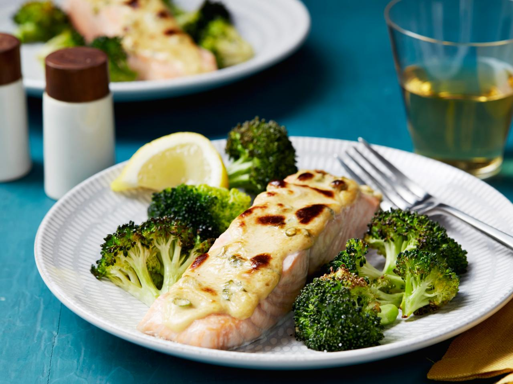

Salmon and Broccoli Recipe

Description
Grilled salmon and broccoli is a spin on a classic dish for dieting. The recipe is simple and flexible, with the main variations being the seasoning used on the salmon and any sauces or condiments added to the dish after completion.
Recommended seasonings include salt and pepper, and recommended condiments include lemon or lime juice, cream sauce, and tomato sauce. Serve with pasta or gnocchi for a more filling dish.
Ingredients
- 300 grams salmon filet
- 100 grams broccoli
- olive or vegetable oil
- seasonings to taste
Steps
- In a small pot, boil enough water to submerge all of the broccoli.
- While the water is boiling, wash the broccoli and deskin the salmon if necessary.
- Season the salmon filet generously on one side with your chosen seasonings.
- Pour a small amount of oil into a medium pan and wait for it to heat.
- Place the seasoned salmon into the pan, flipping occasionally.
- Once the water is boiling, boil or steam the broccoli for 5 minutes.
- Check the salmon for doneness. Once both main ingredients are finished, take off the heat and serve with your chosen condiments.